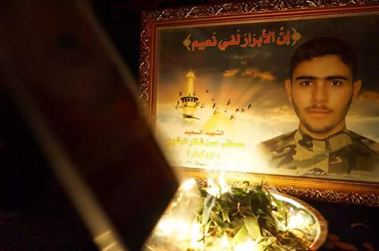

الشهيد مصطفى البشيري
موقع تذكاري يوثق السيرة، القيم، والتضحيات — وحلقات توثيقية (32 حلقة)
سيرة تُروى… وذكرى لا تغيب
هذا الموقع مساحة لتخليد حياة الشهيد مصطفى البشيري: سيرته، أثره، ومواقف تُلهم من عرفه ومن سمع عنه.

نبذة مختصرة
تعريف سريعالشهيد مصطفى حسن شاكر البشيري : وُلد الشهيد مصطفى حسن شاكر البشيري في مدينة قم المقدسة عام 1993، ونشأ من أسرة عراقية من أهالي قرية بشير التركمانية في محافظة كركوك. كبر وهو يحمل في داخله وعيًا مبكرًا بالدين والمسؤولية، فتميّز منذ صغره بالالتزام، والعفّة، والجدّ في طلب العلم. التحق بجامعة الكوفة، كلية علوم الحاسوب والرياضيات، وكان من الطلبة المتفوّقين، حتى اختير ضمن الخمسة الأوائل المرشحين لبعثة دراسية خارج العراق، وقُبل في جامعة ليستر البريطانية. وفي وقت كان المستقبل العلمي مفتوحًا أمامه، اختار طريقًا آخر، مؤمنًا بأن الدفاع عن العقيدة والوطن واجب لا يُؤجَّل. تزوّج في سن مبكرة، ورُزق بولده الوحيد كرّار، ولم يكن عمره عند استشهاد والده سوى شهرين. ومع تصاعد الأحداث الأمنية وسقوط قرية البشير بيد تنظيم داعش عام 2014، لبّى مصطفى نداء الجهاد، وشارك في الدفاع عن قريته وأهله. فُقد بعد المعارك، ثم تبيّن لاحقًا أنه استُشهد في التاسع والعشرين من حزيران عام 2014، وبقي جثمانه مدة إلى أن تحرّرت المنطقة والتُعرّف عليه. رحل شابًا، لكنه ترك سيرة رجلٍ جمع في عمرٍ قصير بين العلم، والإيمان، والتضحية، فكان مثالًا للطالب الواعي الذي قدّم دمه على قلمه.
قيم تركها
رسائل ملهمة-
الثبات على الحق
لم يتراجع أمام الخوف، ولا أمام قلة الناصر، ولا أمام مغريات الحياة. ثبت على مبادئه منذ طفولته حتى آخر لحظة، ودفع ثمن الثبات بروحه، فكان مثالًا لمن لا يساوم على الحق مهما كانت الظروف.
-
الإخلاص والمسؤولية
عاش وهو يشعر بالمسؤولية تجاه دينه وأهله ووطنه. لم ينتظر غيره ليقوم بالواجب، ولم يحمّل غيره ما يستطيع هو القيام به، فكان مبادرًا، صادق النية، يعمل لا ليُذكر بل لأن الواجب يناديه.
-
العفّة ونقاء السيرة
حفظ بصره، ولسانه، وسلوكه، وعاش نظيف القلب والسيرة. كانت عفّته جزءًا من جهاده اليومي قبل جهاد الميدان، فترك أثرًا أخلاقيًا قبل أن يترك أثرًا عسكريًا.
محطات في حياته
خط زمني-
محطة البناء الإيماني والخلقي (الطفولة والشباب)
منذ صغره تميّز بالالتزام الديني، وكثرة الذكر، وحبّ الصلاة، والعفّة، والدفاع عن المظلومين. كان مجاهدًا بسلوكه قبل أن يكون مجاهدًا بسلاحه، وتكوّنت شخصيته على أساس الوعي، والغيرة على الدين، وبرّ الوالدين.
-
محطة العلم وتحمّل المسؤولية (الجامعة وتكوين الأسرة)
التحق بالجامعة، وانتقل إلى جامعة الكوفة، ووازن بين طلب العلم والالتزام الديني. تزوّج زواجًا بسيطًا قائمًا على الإيمان، ورُزق بولده كرّار، فازدادت مسؤوليته دون أن تُضعف عزيمته أو تغيّر مبادئه.
-
محطة الجهاد والشهادة (القرار والميدان)
عند سقوط الموصل وتهديد القرى وصدور فتوى الجهاد، اتخذ قراره بوعي كامل، ولبّى النداء دون تردّد. شارك في الدفاع عن القرى المظلومة، وثبت في المعركة حتى آخر لحظة، وتقدّم رغم الجراح وقلة الناصر، فختم حياته بالشهادة كما عاشها: ثابتًا صادقًا.